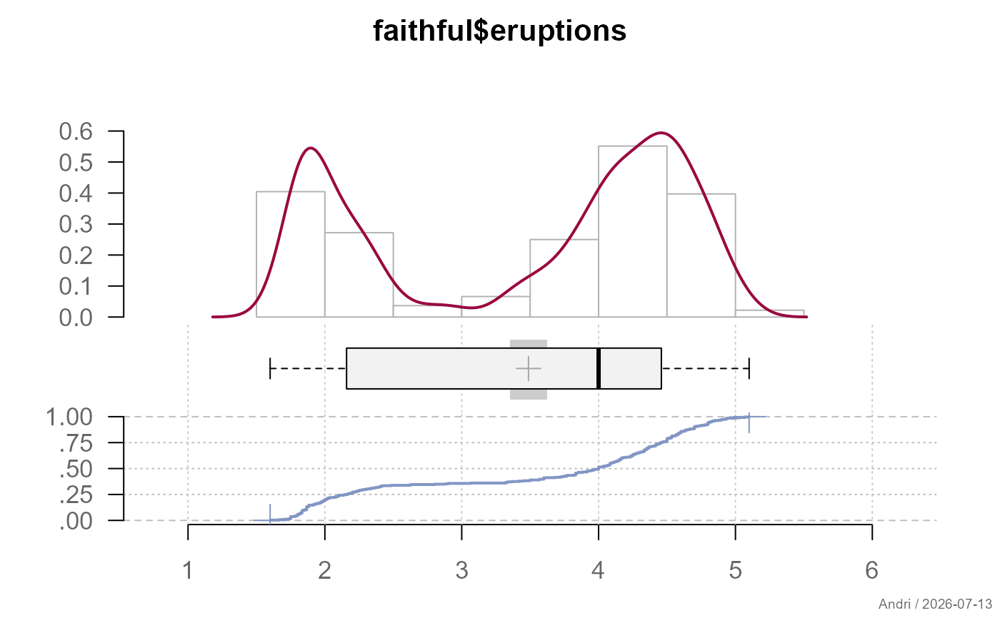
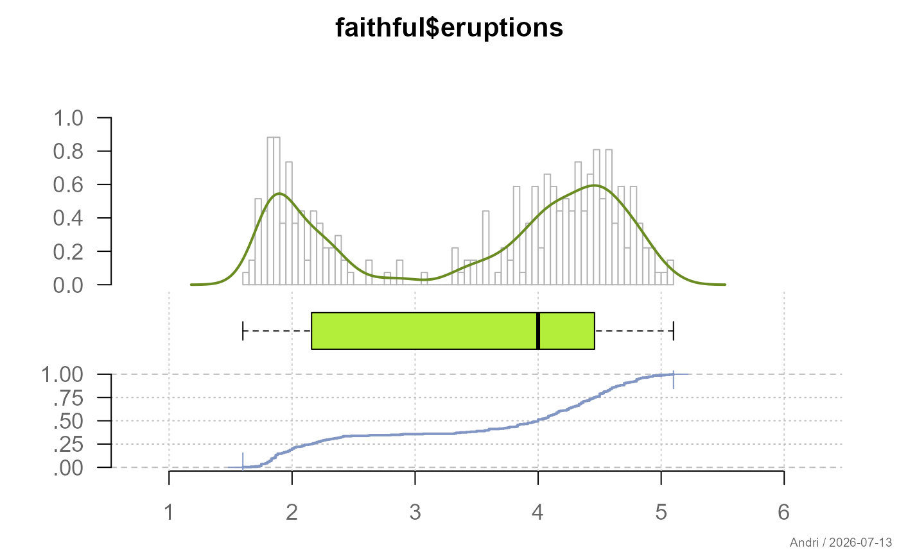
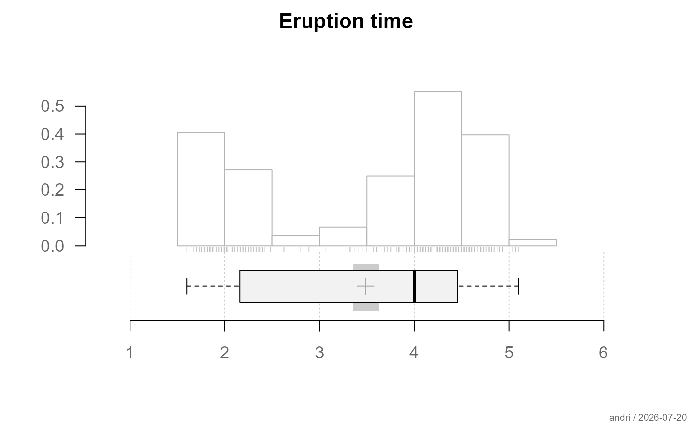
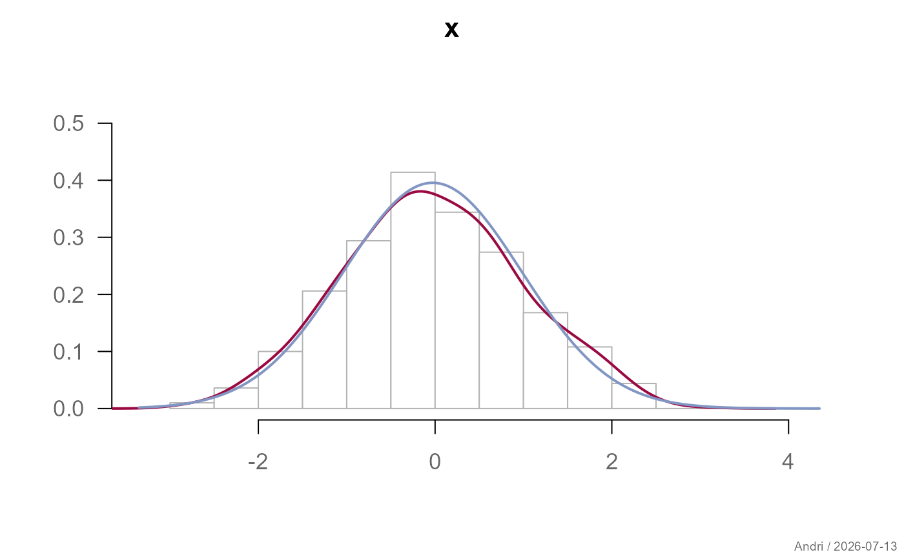
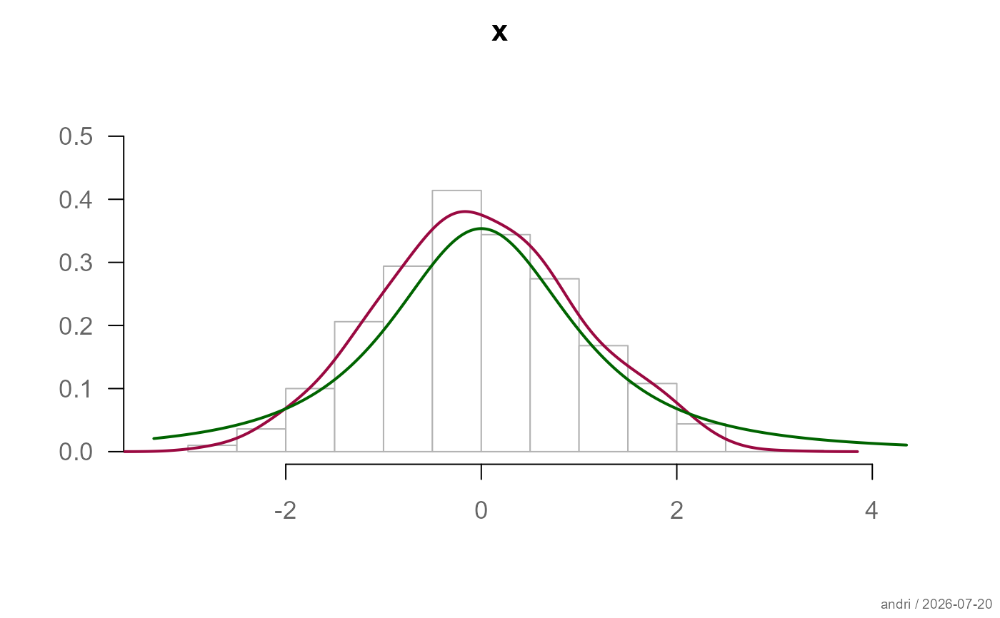
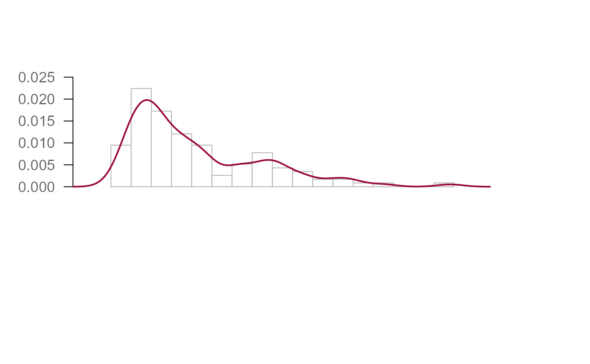

Creates a univariate graphical summary combining a histogram (or probability mass plot for discrete data), a kernel density curve, a boxplot, and an empirical cumulative distribution function in a single multi-panel figure. Optional components include a rug, and fitted theoretical distribution curves for both the histogram and the ECDF panel.
Usage
plotFdist(
x,
main = NULL,
xlab = "",
xlim = NULL,
na.rm = FALSE,
heights = NULL,
hist = TRUE,
dens = TRUE,
rug = FALSE,
curve = FALSE,
boxplot = TRUE,
ecdf = TRUE,
curveEcdf = FALSE,
stamp = .useTheme,
...
)Arguments
- x
numeric vector whose distribution is to be plotted.
- main
main title.
NULL(default) derives the title fromdeparse(substitute(x))."",NA, orFALSEsuppress the title and compact the top margin.- xlab
label for the x-axis. The variable name is typically placed in
main, so this defaults to"".- xlim
range of the x-axis.
NULL(default) uses a pretty range ofrange(x, na.rm = TRUE).- na.rm
logical; should
NAs be removed before plotting? The density function requires complete cases, soTRUEis recommended whenxcontains missing values. DefaultFALSE.- heights
numeric vector of relative panel heights for
layout: three values for histogram/boxplot/ecdf, two for histogram/boxplot or histogram/ecdf only.NULL(default) chooses automatically.- hist
controls the histogram panel.
TRUE(default) uses package defaults;FALSE/NAsuppresses the panel (not recommended: also disables automaticxlimdetection); a list overrides specific arguments forwarded tohist. The elementtypeselects the plot style:"hist"(standard histogram, chosen automatically for continuous or high-cardinality data) or"mass"(vertical bars per unique value, for discrete/low-cardinality data).- dens
controls the kernel density curve.
TRUE(default) draws a curve viadensity; a list overrides specific arguments (e.g.list(bw = 0.1, col = "red")).- rug
controls a rug plot.
FALSE(default) suppresses it;TRUEor a list draw a rug viarug.- curve
controls a fitted theoretical distribution curve on the histogram.
FALSE(default) suppresses it;TRUEorNULLdraws a normal curve withmean(x)/sd(x); a list may includeexpras a character string or expression for any distribution (e.g.list(expr = "dt(x, df=2)", col = "darkgreen")).- boxplot
controls the boxplot panel.
TRUE(default) draws a horizontal boxplot with a mean marker and CI band;FALSE/NAsuppresses the panel. A list overrides arguments forwarded toboxplot; two extra elements control the mean display:pch.mean(default3) andcol.meanci(defaultgetTheme()$grid$col). Set either toNAto suppress that element.- ecdf
controls the ECDF panel.
TRUE(default) callsplotECDF; a list overrides specific arguments.- curveEcdf
controls a fitted theoretical CDF curve on the ECDF panel, analogous to
curve.FALSE(default) suppresses it.- stamp
controls the corner stamp.
.useTheme(default) resolves togetTheme()$stamp.TRUE/FALSE/NULL, a string, or a named list forstamp().- ...
further graphical parameters passed to
parvia the internal framework.
Details
Each plot component is controlled via a single argument accepting
callIf semantics:
TRUE: draw with package defaultsFALSE,NULL, orNA: suppress entirelya named list: draw with the given overrides merged into the defaults
Performance: for very large vectors (n > 1e7) the density curve, ECDF,
and semi-transparent boxplot outliers will still take noticeable time.
For exploratory work on very large data, consider sampling first:
plotFdist(x[sample(length(x), 5000)]).
See also
hist, boxplot, plotECDF,
density, rug, layout,
theme
Other plot.univariate:
plotArea(),
plotBar(),
plotBox(),
plotCatDist(),
plotDens(),
plotDensBox(),
plotDot(),
plotECDF(),
plotLines(),
plotQQ(),
plotViolin()
Examples
plotFdist(faithful$eruptions, na.rm = TRUE)

# custom histogram breaks, density color, boxplot styling
plotFdist(faithful$eruptions,
hist = list(breaks = 50),
dens = list(col = "olivedrab4"),
na.rm = TRUE,
boxplot = list(col = "olivedrab2", pch.mean = NA, col.meanci = NA))

# no density, no ecdf, add rug instead
plotFdist(faithful$eruptions,
dens = FALSE, ecdf = FALSE,
hist = list(xaxt = "s"),
rug = TRUE,
heights = c(3, 2.5),
main = "Eruption time")

# overlay a normal density curve
x <- rnorm(1000)
plotFdist(x, curve = TRUE, boxplot = FALSE, ecdf = FALSE)

# compare with a t-distribution curve
plotFdist(x,
curve = list(expr = "dt(x, df=2)", col = "darkgreen"),
boxplot = FALSE, ecdf = FALSE)

# overlay gamma distribution on both histogram and ECDF
ozone <- airquality$Ozone
m <- mean(ozone, na.rm = TRUE)
v <- var(ozone, na.rm = TRUE)
plotFdist(ozone,
hist = list(breaks = 15),
curve = list(expr = "dgamma(x, shape = m^2/v, scale = v/m)",
col = "navajowhite3"),
curveEcdf = list(expr = "pgamma(x, shape = m^2/v, scale = v/m)",
col = "navajowhite3"),
na.rm = TRUE, main = "Airquality - Ozone")
#> Error in eval(expr, envir = ll, enclos = parent.frame()): object 'm' not found
